GIT Ariketa 5.1.4 · Reto colaborativo
Contenido completo del documento original del ejercicio.
GIT Ariketa 5.1.4
RETO COLABORATIVO
1. Configuración de permisos e invitación
Para comenzar el trabajo en pareja, el propietario del repositorio (uno de los dos) debe invitar al otro alumno como colaborador:
• Accede a la configuración del repositorio en GitHub (Settings > Collaborators).
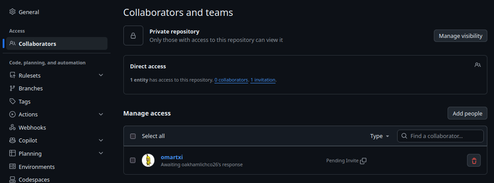
• Envía la invitación con permisos de escritura al usuario de GitHub de tu compañero.
• El segundo alumno debe aceptar la invitación desde su correo electrónico o directamente en GitHub para poder publicar ramas y realizar cambios.
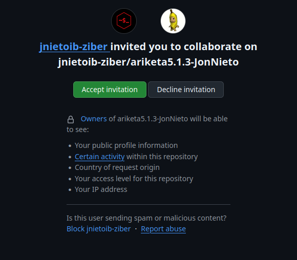
2. Desarrollo en ramas paralelas
Cada alumno trabajará de forma aislada en su propia rama de trabajo:
• Alumno A ([ALUMNO A]):
◦ Crea la rama feature/montana a partir de main actualizada.
◦ Edita ziber_localidades.txt añadiendo al final las localidades de montaña: Tolosa, Ordizia, Azpeitia.
◦ Realiza el commit correspondiente y publica la rama en el repositorio remoto.
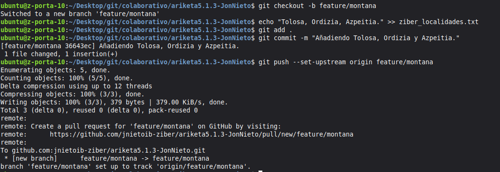
• Alumno B (Omar Akhamlich):
◦ Crea la rama feature/costa a partir de main actualizada.
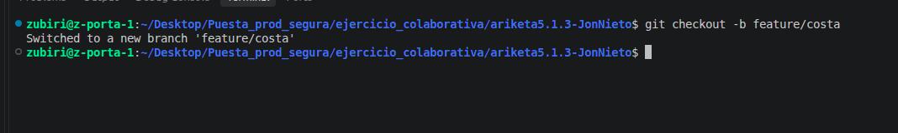
◦ Edita ziber_localidades.txt añadiendo al final las localidades costeras: Zarautz, Getaria, Mutriku.
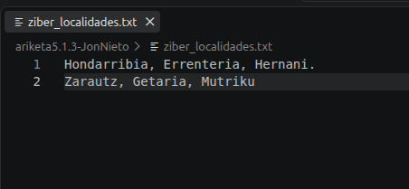
◦ Realiza el commit correspondiente y publica la rama en el repositorio remoto.
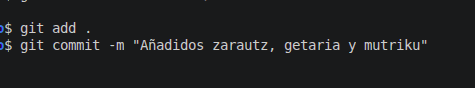
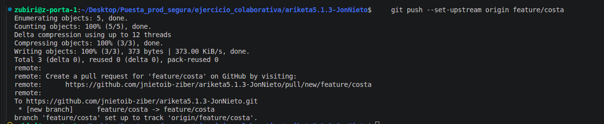
3. Protocolo de Pull Request y Code Review (Revisión de Código)
Ambos alumnos deberán seguir un flujo formal de revisión:
1. Creación del Pull Request:
◦ Cada alumno abre un Pull Request solicitando integrar su rama en main.
◦ Completa la descripción indicando: qué cambios incluye, qué archivos modifica y qué comprobaciones se han hecho.
◦ Asigna obligatoriamente a su compañero como Reviewer (revisor) y Assignee (responsable).
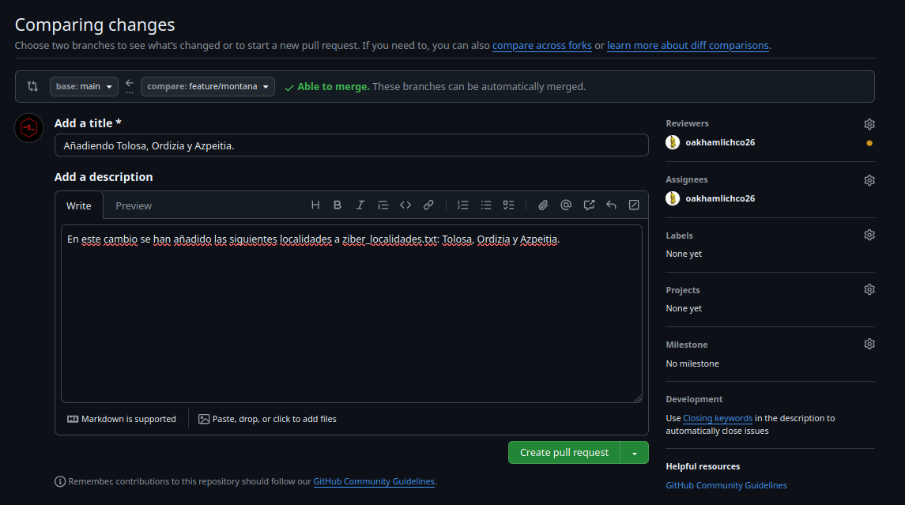
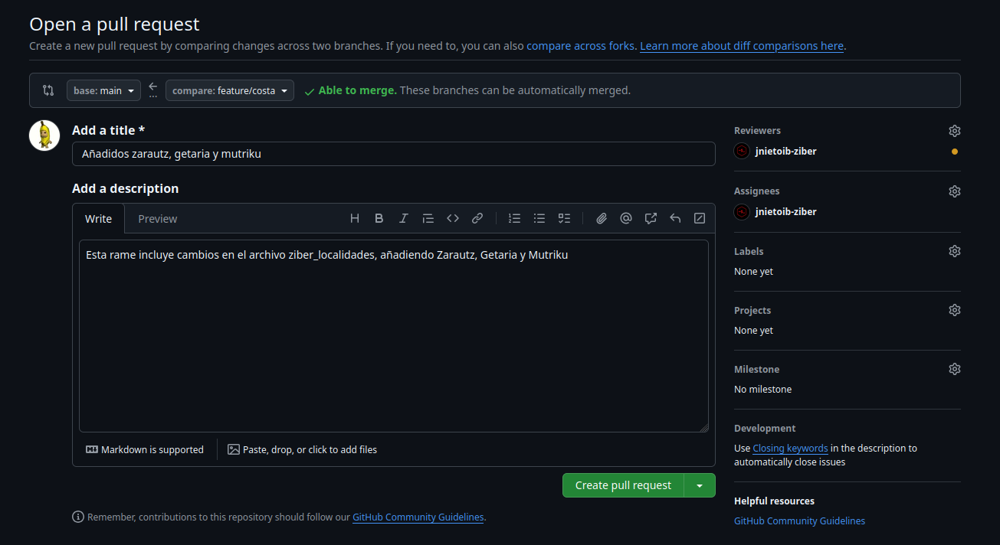
2. Proceso de Revisión (Code Review):
◦ El revisor accede a la pestaña Files changed del Pull Request de su compañero.
◦ Revisa que las líneas agregadas sean correctas y que no haya errores de formato.
◦ Añade al menos un comentario en una línea específica y deja una aprobación formal (Approve).
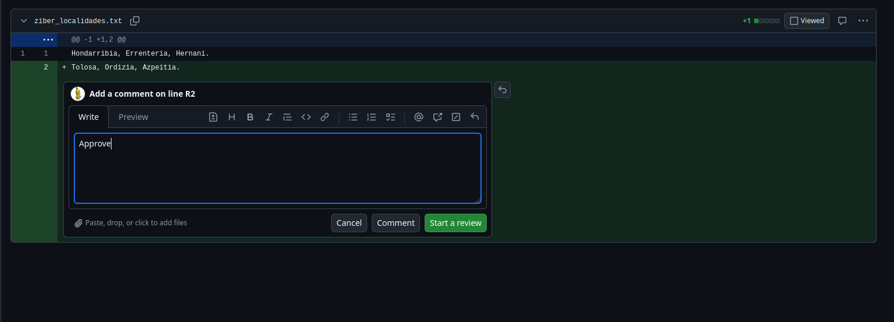
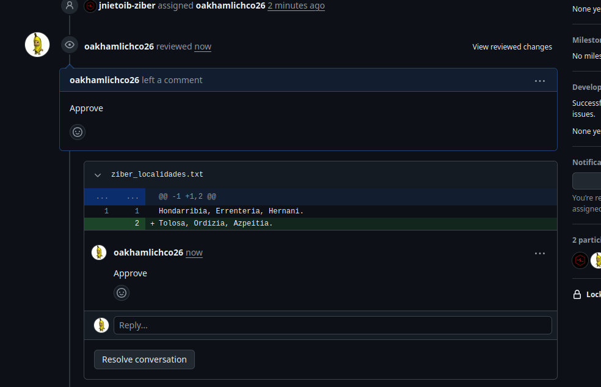
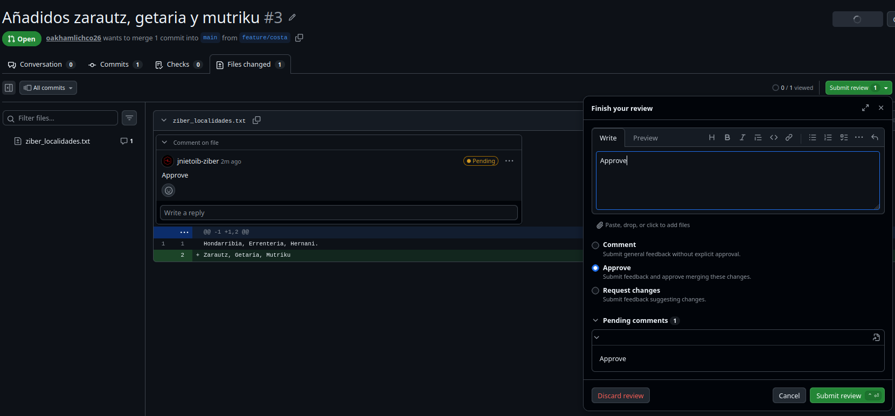
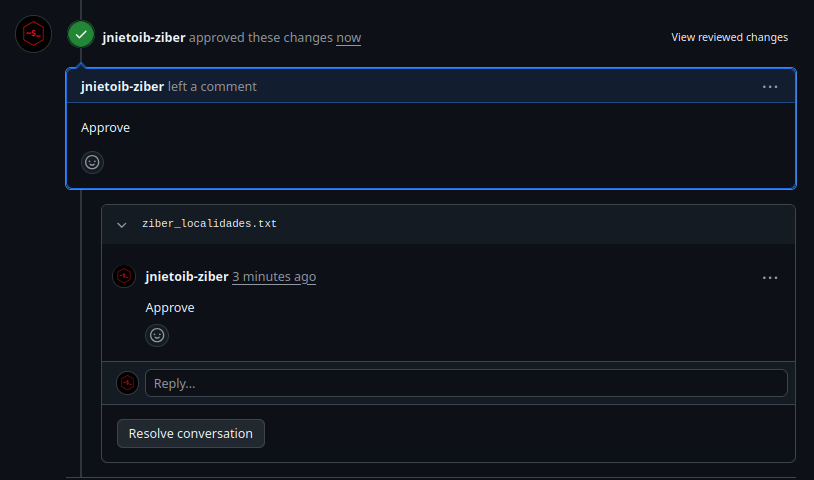
3. Integración:
◦ Una vez aprobado el Pull Request, el autor del cambio o el revisor ejecuta el Merge en GitHub y elimina la rama remota que ya ha sido integrada.
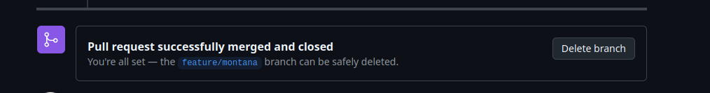
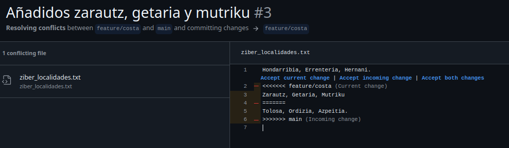
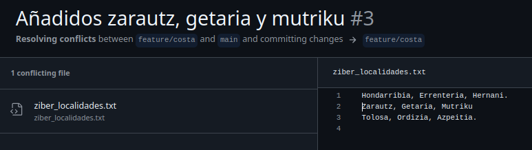
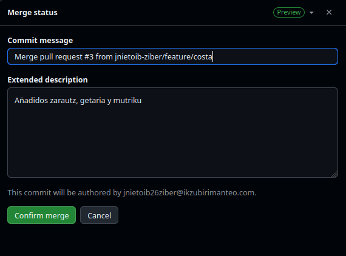
En caso del segundo merge, tras editar ambos usuarios el mismo archivo, existiran conflictos que se deben resolver antes de fusionar ambar ramas. De lo contrario, github no permitira proceder con la fusion de ramas. PAra ello, el usuario decidira que cambios mantener y descartar.
RETO DE CONFLICTO
1. Simulación del conflicto real
Ambos alumnos editarán simultáneamente las mismas líneas del archivo para provocar una colisión de cambios que Git no pueda resolver de forma automática:
• Alumno A ([ALUMNO A]):
◦ Crea una rama feature/edicion-alumno-a.
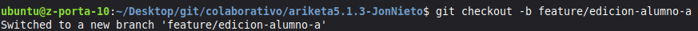
◦ Modifica las líneas existentes de Donostia y Pasaia para incluir la provincia:
Donostia - Gipuzkoa
Pasaia - Gipuzkoa
◦ Guarda, realiza el commit y publica la rama.
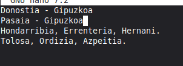
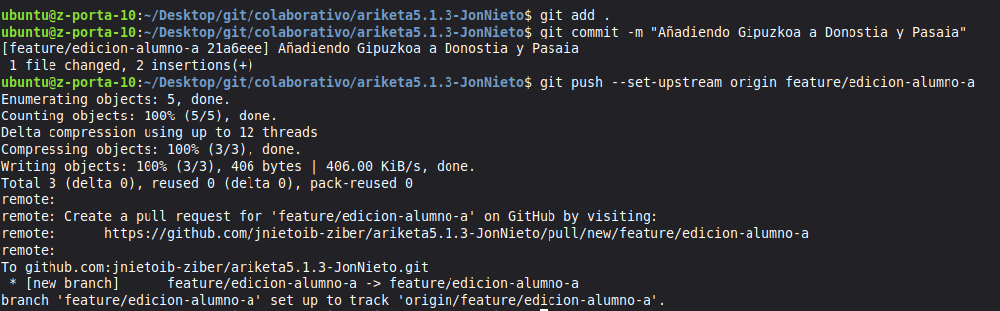
• Alumno B (Omar AKhamlich):
◦ Crea una rama feature/edicion-alumno-b.
◦ Modifica las mismas líneas de Donostia y Pasaia para incluir una descripción geográfica o funcional:
Donostia (capital)
Pasaia (costa)
◦ Guarda, realiza el commit y publica la rama.
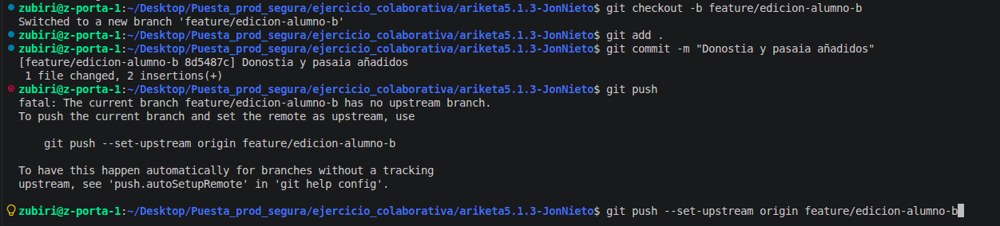
2. Secuencia de integración y detección del bloqueo
1. Alumno A abre su Pull Request, su compañero lo revisa, lo aprueba y se completa la integración (Merge) en la rama main.
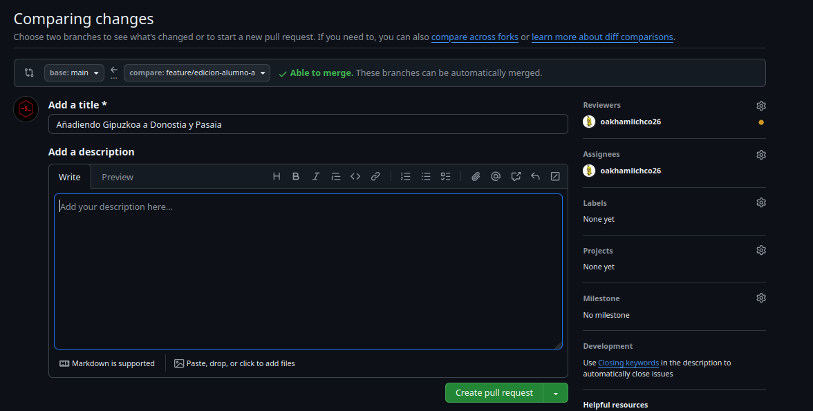
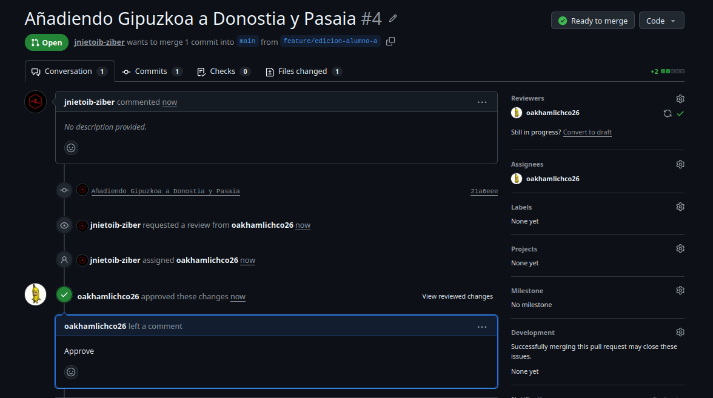
2. Alumno B intenta abrir o integrar su Pull Request hacia main.
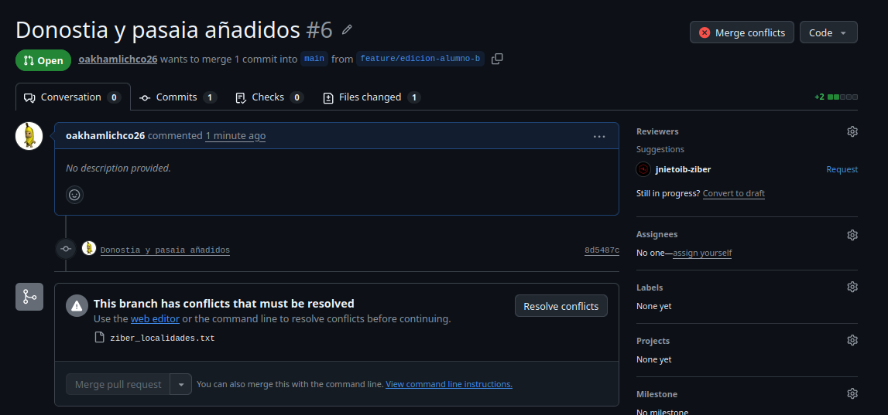
3. GitHub notificará que no es posible realizar la fusión automática debido a la existencia de un conflicto entre ramas (Merge Conflict).
3. Resolución del conflicto
1. Alumno B debe sincronizar su entorno local descargando los últimos cambios de main e intentando fusionar main en su rama de trabajo (feature/edicion-alumno-b).
2. Al detectar el conflicto, Git insertará los marcadores de conflicto (<<<<<<<, =======, >>>>>>>).
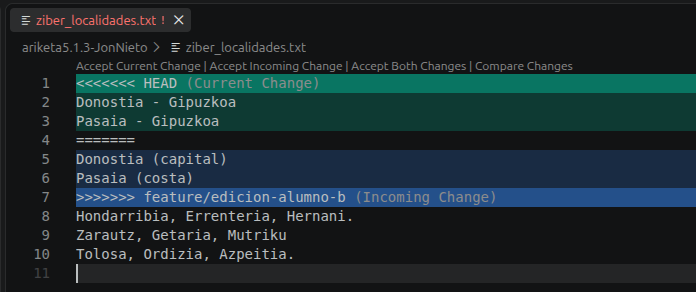
3. Regla de resolución inteligente: No se debe descartar el trabajo de ninguno de los dos colaboradores. Se deben combinar ambos aportes para mantener toda la información útil.
4. El archivo editado manualmente debe quedar con esta estructura:
Donostia - Gipuzkoa (capital)
Pasaia - Gipuzkoa (costa)
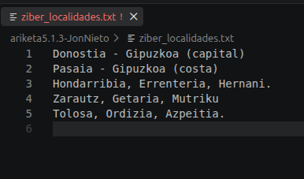
5. Alumno B elimina los marcadores, completa el commit de resolución del conflicto, actualiza su rama remota y finaliza la integración del Pull Request.
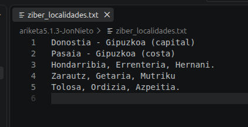
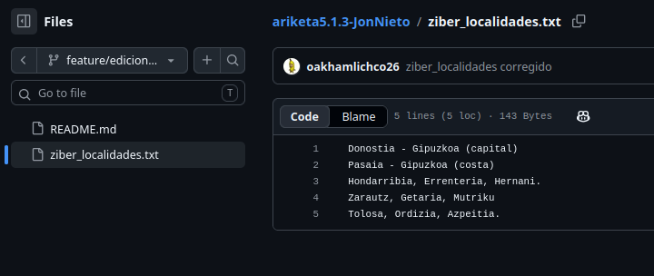
RETO FINAL Y AUDITORÍA DE CALIDAD
1. Estado final del fichero
Al finalizar el trabajo en equipo, el archivo ziber_localidades.txt debe contener exactamente las 18 localidades correctamente integradas:
Urnieta
Andoain
Irun
Beasain
Donostia - Gipuzkoa (capital)
Pasaia - Gipuzkoa (costa)
Lasarte-Oria
Oiartzun
Lesaka
Ordizia
Hondarribia
Errenteria
Hernani
Tolosa
Azpeitia
Zarautz
Getaria
Mutriku
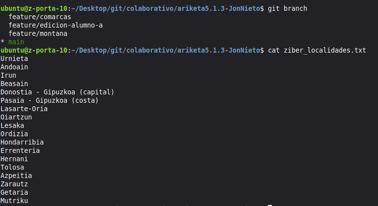
2. Auditoría integral del repositorio
Antes de dar por concluida la práctica, el equipo debe verificar que se cumplen todos los requisitos de calidad exigidos:
• Sincronización: La rama principal (main) en local y en GitHub están en el mismo punto de la historia.
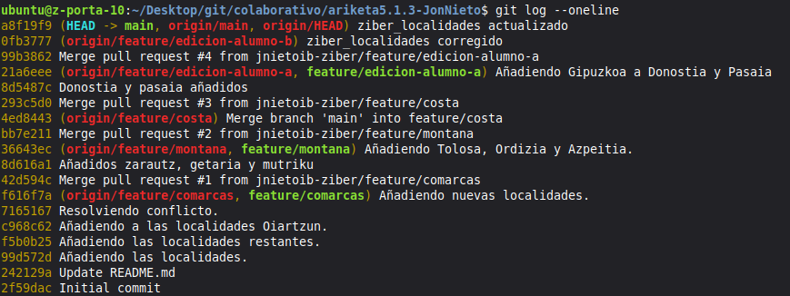
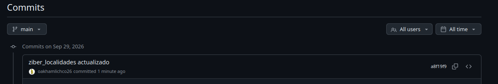
• Limpieza: No existen marcas de conflicto olvidadas ni archivos temporales en el directorio.
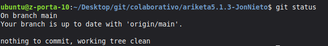
• Seguridad: El archivo .gitignore está correctamente configurado e ignora archivos .env y secretos.
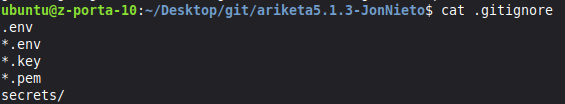
• Historial de cambios: El árbol del historial refleja con claridad el flujo de trabajo: creación de ramas, commits descriptivos, puntos de fusión (merges) y reversión de cambios.
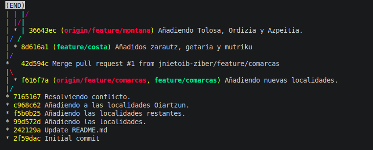
• Trazabilidad colaborativa: Existen evidencias claras en GitHub de Pull Requests, comentarios de revisión de código y resolución de conflictos.
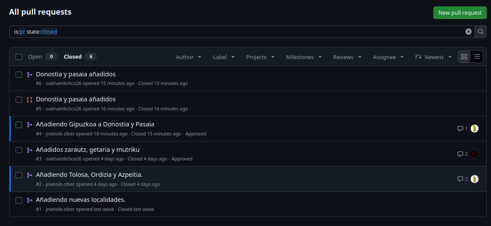
CREAR UNA VERSIÓN Y PUBLICACIÓN DE RELEASE
1. Creación y publicación del Tag
Una vez que el repositorio está auditado y validado en la rama main:
• Crea una etiqueta fija (tag) con la versión semántica v1.0.0 para marcar el estado definitivo del proyecto.
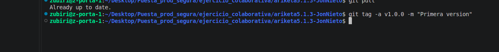
• Sube la etiqueta al repositorio remoto para que quede registrada globalmente en GitHub.
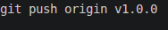
2. Creación del Release oficial en GitHub
Para documentar la entrega del proyecto de forma profesional:
1. En GitHub, navega hasta la sección Releases y selecciona la opción de crear un nuevo Release (Draft a new release).
2. Selecciona la etiqueta v1.0.0 previamente creada.
3. Establece como título del Release: Versión 1.0.0 - Sincronización y Resolución de Conflictos.
4. En la descripción incluye un Changelog (Registro de Cambios) formal con la siguiente estructura:
## Release v1.0.0 — Práctica de Git y GitHub
### Novedades
* Integración de localidades iniciales y comarcas en `ziber_localidades.txt`.
* Incorporación colaborativa de localidades de montaña y costa.
### Correcciones y Seguridad
* Reversión de cambios erróneos en el historial mediante `git revert`.
* Implementación de `.gitignore` para la protección de variables de entorno y credenciales.
* Resolución de conflictos de edición concurrente en localidades principales (Donostia/Pasaia).
### Colaboradores
* @AlumnoA
* @AlumnoB
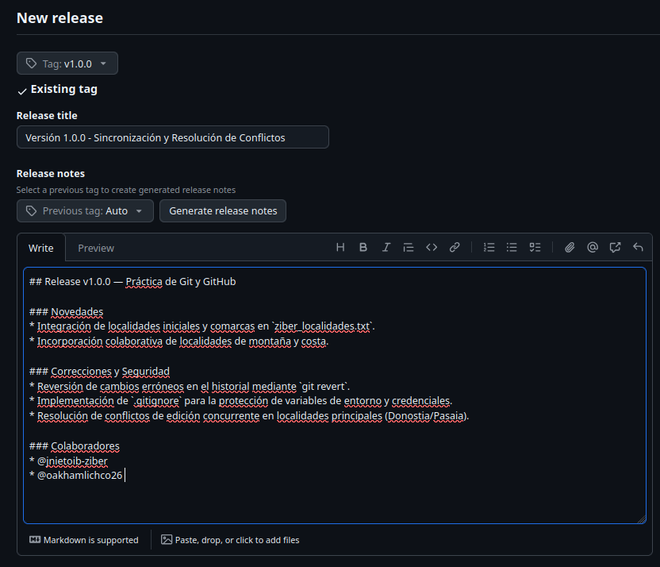
5. Publica el Release (Publish release) y comprueba que esté visible en la página principal del repositorio.
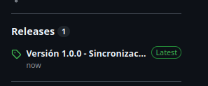